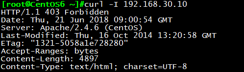
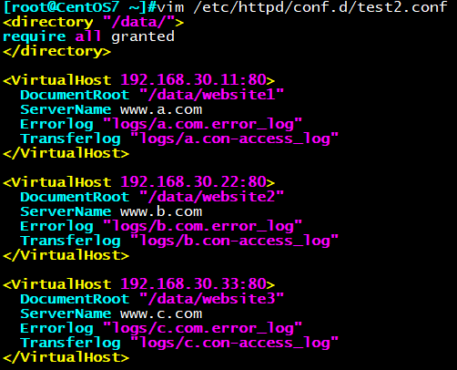

一、Apache介绍
Apache是世界使用排名第一的Web服务器软件。它可以运行在几乎所有广泛使用的计算机平台上，
由于其跨平台和安全性被广泛使用，是最流行的Web服务器端软件之一。
它快速、可靠并且可通过简单的API扩充，将Perl/Python等解释器编译到服务器中。
发展历史：
20世纪90年代初，国家超级计算机应用中心NCSA开发
1995年开源社区发布apache（a patchy server）
ASF: apache software foundation
FSF：Free Software Foundation
特性：
- 高度模块化：core+modules
- 动态加/卸载：DSO(Dynamic Shared Object)
- 多路处理模块：MPM(multi-processing module)
功能特性：
虚拟主机: 基于IP、Port、FQDN的建立的
CGI(通用网关接口):
CGI是WWW技术中最重要的技术之一，有着不可替代的重要地位。CGI是外部应用程序与WEB服务器之间的接口标准，是在CGI程序和Web服务器之间传递信息的过程。CGI规范允许Web服务器执行外部程序，并将它们的输出发送给Web浏览器，CGI将Web的一组简单的静态超媒体文档变成一个完整的新的交互式媒体。
反向代理
是指以代理服务器来接受internet上的连接请求，然后将请求转发给内部网络上的服务器，并将从服务器上得到的结果返回给internet上请求连接的客户端，此时代理服务器对外就表现为一个反向代理服务器
负载均衡
负载均衡建立在现有网络结构之上，它提供了一种廉价有效透明的方法扩展网络设备和服务器的带宽、增加吞吐量、加强网络数据处理能力、提高网络的灵活性和可用性
路径别名
丰富的用户认证机制
basic：明文传输密码信息认证机制
digestL：加密传输密码认证机制
支持第三方模块
Httpd安装及主要文件
版本：
CentOS 6：2.2
CentOS 7：2.4
安装方式：
- rpm，yum：centos发行版，稳定，建议使用
- 编译安装：定制或特殊需求
CentOS 6程序环境：httpd-2.2
配置文件：
/etc/httpd/conf/httpd.conf
/etc/httpd/conf.d/*.conf
检查配置语法：
httpd –t
service httpd configtest
服务脚本：/etc/rc.d/init.d/httpd
脚本配置文件：/etc/sysconfig/httpd
服务控制和启动：
chkconfig httpd on|off
service {start|stop|restart|status|configtest|reload} httpd
站点网页文档根目录：
/var/www/html
模块文件路径：
/etc/httpd/modules
/usr/lib64/httpd/modules
主程序文件：
/usr/sbin/httpd
/usr/sbin/httpd.worker
/usr/sbin/httpd.event
主进程文件：
/etc/httpd/run/httpd.pid
日志文件目录：
/var/log/httpd
access_log: 访问日志
error_log：错误日志
帮助文档包：
httpd-manual
Apache是一个模块化的程序，管理员可以选择一些模块来增加服务器的某些功能。
这些模块，可以在创建服务器程序时静态地编译到httpd服务器的二进制代码中，
也可以编译成一些独立于服务器程序的DynamicShared Objects (DSOs)文件
模块索引官方文档：http://httpd.apache.org/docs/2.4/mod/
查看静态编译的模块: httpd -l
查看静态编译及动态装载的模块: httpd –M
动态模块加载:不需重启即生效
动态模块路径:/usr/lib64/httpd/modules/
httpd-2.4
新特性
MPM支持运行为DSO机制；以模块形式按需加载
event MPM生产环境可用
异步读写机制
支持每模块及每目录的单独日志级别定义
每请求相关的专用配置
增强版的表达式分析式
毫秒级持久连接时长定义
基于FQDN的虚拟主机不需要NameVirutalHost指令
新指令，AllowOverrideList
支持用户自定义变量
更低的内存消耗
修改了一些配置机制
不再支持使用Order, Deny, Allow来做基于IP的访问控制
新模块
mod_proxy_fcgi: 用于MODY代理的FASCGI协议后端
mod_remoteip:
替换表观客户端远程IP地址用IP地址列表请求的主机名由代理或负载平衡器通过请求报头。
mod_ratelimit: 为客户端提供带宽速率限制
CentOS 7程序环境：
安装方法：rpm，编译安装
配置文件：
/etc/httpd/conf/httpd.conf
/etc/httpd/conf.d/*.conf
模块相关的配置文件：
/etc/httpd/conf.modules.d/*.conf
systemd unit file：
/usr/lib/systemd/system/httpd.service
主程序文件：
/usr/sbin/httpd
httpd-2.4支持MPM的动态切换
日志文件：
/var/log/httpd
access_log：访问日志
error_log：错误日志
站点文档：
/var/www/html
模块文件路径：
/usr/lib64/httpd/modules
服务控制：
systemctl enable|disable httpd.service
systemctl {start|stop|restart|status} httpd.service
二、httpd-2.2常用设置
httpd配置文件的组成：
grep “Section” /etc/httpd/conf/httpd.conf ：
1 | ### Section 1: Global Environment： 全局设置 |
配置格式： directive value
directive: 不区分字符大小写
value: 为路径时，是否区分大小写，取决于文件系统
1. 服务器版本信息显示格式
1 | ServerTokens Major|Minor|Min[imal]|Prod[uctOnly]|OS|Full |
建议使用：ServerTokens Prod
示例：
当使用curl –I命令访问一台主机时，系统默认： ServerTokens OS

修改为：ServerToken Prod
2. 修改监听的IP和Port
Listen [IP:]PORT
(1) 省略IP表示为本机所有IP
(2) Listen指令至少一个，可重复出现多次
Listen 80
Listen 8080
示例：vim /etc/httpd/conf/httpd.conf
1 | Listen 192.168.1.7:8080 |
注：当主配置文件/etc/httpd/conf/httpd.conf以及 /etc/httpd/conf.d目录下同时有Listen指令时，将同时生效
3.持久连接
Persistent Connection：连接建立，每个资源获取完成后不会断开连接，而是继续等待其它的请求完成，
默认关闭持久连接
断开条件：数量限制：100
时间限制：以秒为单位， httpd-2.4 支持毫秒级
副作用：对并发访问量较大的服务器，持久连接功能会使用有些请求得不到响应
折衷：使用较短的持久连接时间
设置：
1 | KeepAlive On|Off # 开启或关闭持久连接 |
测试：
1 | telnet WEB_SERVER_IP PORT |
4. MPM 多路处理模块
经过适当的配置，可以提高服务器的负载能力。
原理是通过增加服务进程数量使服务器可以同时处理更多用户请求。
三种模式：prefork, worker, event（2.2为试验阶段）
httpd-2.2不支持同时编译多个模块，所以只能编译时选定一个；rpm安装
的包提供三个二进制程序文件，分别用于实现对不同MPM机制的支持
确认方法：
httpd –V
ps aux | grep httpd
默认为/usr/sbin/httpd, 即prefork模式
更换使用的httpd程序：
1 | vim /etc/sysconfig/httpd |
重启服务生效
1 | service httpd restart |
Httpd 2.4 与之不同
以动态模块方式提供
配置文件：
1 | vim /etc/httpd/conf.modules.d/00-mpm.conf |
重启服务生效
pstree -p|grep httpd 查看进程和线程
prefork：
多进程I/O模型，每个进程响应一个请求，默认模型
一个主进程：生成和回收n个子进程，创建套接字，不响应请求
多个子进程：工作work进程，每个子进程处理一个请求；系统初始时，预先生成多个空闲进程，等待请求，最大不超过1024个
优点：成熟稳定，兼容所有新老模块。同时，不需要担心线程安全的问题。（我们常用的mod_php，PHP的拓展不需要支持线程安全）
缺点：一个进程相对占用更多的系统资源，消耗更多的内存。而且，它并不擅长处理高并发请求，在这种场景下，它会将请求放进队列中，一直等到有可用进程，请求才会被处理。
prefork的默认配置：
1 | <IfModule prefork.c> |
worker：
复用的多进程I/O模型,多进程多线程，IIS使用此模型
一个主进程：生成m个子进程，每个子进程负责生个n个线程，每个线程响应一个请求，并发响应请求：m*n
优点：占据更少的内存，高并发下表现更优秀。
缺点：必须考虑线程安全的问题，因为多个子线程是共享父进程的内存地址的。
如果使用keep-alive的长连接方式，某个线程会一直被占据，也许中间几乎没有请求，需要一直等待到超时才会被
释放。如果过多的线程，被这样占据，也会导致在高并发场景下的无服务线程可用。（该问题在prefork模式下，
同样会发生）
worker的默认配置：
1 | <IfModule worker.c> |
event：
事件驱动模型（worker模型的变种）
一个主进程：生成m个子进程，每个进程直接响应n个请求，并发响应请求：m*n，
有专门的线程来管理这些keep-alive类型的线程，当有真实请求时，将请求传递给服务线程，
执行完毕后，又允许释放。这样增强了高并发场景下的请求处理能力
httpd-2.2: event 测试版，centos6默认
httpd-2.4：event 稳定版，centos7默认
5. DSO 动态共享对象
加载动态模块配置文件
/etc/httpd/conf/httpd.conf
配置指定实现模块加载格式：
LoadModule <mod_name> <mod_path>
模块文件路径可使用相对路径：
相对于ServerRoot（默认/etc/httpd）
示例：
1 | LoadModule auth_basic_module |
6. 更改httpd服务默认目录
DocumentRoot “/path”
文档路径映射：DocumentRoot指向的路径为URL路径的起始位置
示例：
DocumentRoot “/app/data”
CentOS7必须给目录授权才能使用：
1 | <Directory “/app/data”> |
注意：SELinux和iptables的状态
7. 定义站点未指定时的默认页面
默认为testing页面：
DirectoryIndex index.html index.html.var
8. 基于IP的访问控制:
CentOS 6：
order和allow、deny
放在directory, .htaccess中
order：定义生效次序；写在后面的表示默认法则
Order allow,deny
Order deny,allow
Allow from和Deny from：定义客户端地址
客户端地址：
IP
网络: 172.16
172.16.0.0
172.16.0.0/16
172.16.0.0/255.255.0.0
CentOS 7：
无明确授权的目录，默认拒绝
允许所有主机访问：Require all granted
拒绝所有主机访问：Require all denied
控制特定的IP访问：
Require ip IPADDR：授权指定来源的IP访问
Require not ip IPADDR：拒绝特定的IP访问
控制特定的主机访问：
Require host HOSTNAME：授权特定主机访问
Require not host HOSTNAME：拒绝
HOSTNAME：
FQDN：特定主机
domin.tld：指定域名下的所有主机
9. 针对资源进行访问控制
可基于两种机制指明对哪些资源进行何种访问控制
访问控制机制有两种：客户端来源地址，用户账号
文件系统路径：
针对目录：
1 | <Directory “/path”> |
针对文件，支持通配符：
1 | <File “/path/file”> |
支持正则表达式：
1 | <FileMatch “PATTERN”> |
URL路径：
1 | <Location “”> |
示例：
1 | <FilesMatch “\.(gif|jpe?g|png)$”> |
10 . 中“基于源地址”实现访问控制
(1) Options：后跟1个或多个以空白字符分隔的选项列表
在选项前的+，- 表示增加或删除指定选项
常见选项：
Indexes：指明的URL路径下不存在与定义的主页面资源相符的资源
文件时，返回索引列表给用户
FollowSymLinks：允许访问符号链接文件所指向的源文件
None：全部禁用
All： 全部允许
示例：
1 | <Directory /web/docs> |
(2) AllowOverride
与访问控制相关的哪些指令可以放在指定目录下的.htaccess（由AccessFileName指定）文件中，
覆盖之前的配置指令
只对
AllowOverride All: 所有指令都有效
AllowOverride None：.htaccess 文件无效
AllowOverride AuthConfig Indexes 除了AuthConfig 和Indexes的其它指令都无法覆盖
11.日志设定
日志类型： /var/log/httpd
访问日志
错误日志
错误日志：
ErrorLog logs/error_log
LogLevel warn
LogLevel 可选值:
debug, info, notice, warn,error,crit, alert, emerg 越靠后等级越高
访问日志：
定义日志格式：LogFormat format strings
LogFormat “%h %l %u %t \”%r\” %>s %b \”%{Referer}i\” \”%{User-Agent}i\”” combined
使用日志格式：
CustomLog logs/access_log combined
参考帮助：http://httpd.apache.org/docs/2.2/mod/mod_log_config.html#formats
1 | %h 客户端IP地址 |
示例：
默认日志中日期显示为：[21/Jun/2018:17:00:54 +0800]
vim /etc/httpd/conf/httpd.conf
1 | LogFormat “%h %l %u %t \”%r\” %>s %b \”%{Referer}i\” \”%{User-Agent}i\”” combined找到此行 |
12. 设定默认字符集
/etc/httpd/conf/httpd.conf： AddDefaultCharset UTF-8
中文字符集：GBK, GB2312, GB18030
13定义路径别名
格式： Alias /URL/ “/PATH/”
1 | DocumentRoot “/www/htdocs” |
14. 基于用户的访问控制
认证质询：WWW-Authenticate：响应码为401，拒绝客户端请求，并说明要求客户端提供账号和密码
认证：Authorization：客户端用户填入账号和密码后再次发送请求报文；认证通过时，则服务器发送响应的资源
认证方式两种：
basic：明文
digest：消息摘要认证,兼容性差
安全域：需要用户认证后方能访问的路径；应该通过名称对其进行标识，以便于告知用户认证的原因
用户的账号和密码
虚拟账号：仅用于访问某服务时用到的认证标识
存储：文本文件，SQL数据库，ldap目录存储，nis等
basic认证配置示例：
- 定义安全域
1 | <Directory “/path”> |
允许账号文件中的所有用户登录访问：
Require valid-user
提供账号和密码存储（文本文件）
使用专用命令完成此类文件的创建及用户管理
htpasswd [options] /PATH/HTTPD_PASSWD_FILE username
-c：自动创建文件，仅应该在文件不存在时使用
-p：明文密码
-d：CRYPT格式加密，默认
-m：md5格式加密
-s: sha格式加密
-D：删除指定用户
基于组账号进行认证
- 定义安全域
1 | <Directory “/path”> |
创建用户账号和组账号文件
组文件：每一行定义一个组
GRP_NAME: username1 username2 …
示例：
1 | <Directory “/www/htdocs/admin”> |
远程客户端和用户验证的控制
Satisfy ALL|Any
ALL 客户机IP和用户验证都需要通过才可以
Any客户机IP和用户验证,有一个满足即可
示例：
Require valid-user
Order allow,deny
Allow from 192.168.1
Satisfy Any
15. 实现用户家目录的http共享
基于模块mod_userdir.so实现
httpd -M |grep userdir
SELinux: http_enable_homedirs
相关设置：
1 | vim /etc/httpd/conf/httpd.conf |
准备目录
su – lpx;mkdir ~/public_html
setfacl –m u:apache:x ~lpx
访问
http://localhost/~lpx/index.html
16. status页面
功能：显示系统中的状态信息，了解服务器状态，监控用
1 | LoadModule status_module modules/mod_status.so |
访问：
http://IP:PORT/server-status 就可以监控apache服务了下面就是该网页所显示的监控情况：
参数说明：
字段 说明
Server Version Apache 服务器的版本。
Server MPM MPM工作模式
Server Built Apache 服务器编译安装的时间。
Current Time 目前的系统时间。
Restart Time Apache 重新启动的时间。
Parent Server Generation Apache 父程序 (parent process) 的世代编号，就是 httpd 接收到 SIGHUP
而重新启动的次数。
Server uptime Apache 启动后到现在经过的时间。
Total accesses 到目前为此 Apache 接收的联机数量及传输的数据量。
CPU Usage 目前 CPU 的使用情形。
_SWSS…. 所有 Apache process 目前的状态。每一个字符表示一个程序，最多可以显示 256 个程序
的状态。
Scoreboard Key 上述状态的说明。以下为每一个字符符号所表示的意义：
* _：等待连结中。
* S：启动中。
* R：正在读取要求。
* W：正在送出回应。
* K：处于保持联机的状态。
* D：正在查找DNS。
* C：正在关闭连结。
* L：正在写入记录文件。
* G：进入正常结束程序中。
* I：处理闲置。
* .：尚无此程序。
Srv 本程序与其父程序的世代编号。
PID 本程序的process id。
Acc 分别表示本次联机、本程序所处理的存取次数。
M 该程序目前的状态。
CPU 该程序所耗用的CPU资源。
SS 距离上次处理要求的时间。
Req 最后一次处理要求所耗费的时间，以千分之一秒为单位。
Conn 本次联机所传送的数据量。
Child 由该子程序所传送的数据量。
Slot 由该 Slot 所传送的数据量。
Client 客户端的地址。
VHost 属于哪一个虚拟主机或本主机的IP。
Request 联机所提出的要求信息。
三、httpd-2.4常用配置
1.切换使用的MPM
Centos 7: /etc/httpd/conf.modules.d/00-mpm.conf
启用要启用的MPM相关的LoadModule指令即可centos6编译安装:
1 | vim /etc/httpd24/httpd.conf |
2.主目录：
DocumentRoot /path
3.基于IP的访问控制:
无明确授权的目录，默认拒绝
允许所有主机访问：Require all granted
拒绝所有主机访问：Require all denied
控制特定的IP访问：
1 | Require ip IPADDR：授权指定来源的IP访问 |
控制特定的主机访问：
1 | Require host HOSTNAME：授权特定主机访问 |
不能有失败，至少有一个成功匹配才成功，即失败优先
1 | <RequireAll> |
多个语句有一个成功，则成功，即成功优先
1 | <RequireAny> |
4. 虚拟主机
基于FQDN的虚拟主机不再需要NameVirutalHost指令
1 | <VirtualHost *:80> |
注意：任意目录下的页面只有显式授权才能被访问
5. ssl:安装mod_ssl，和httpd-2.2相同配置
6. KeepAlive on
1 | KeepAliveTimeout #ms |
四、mod_deflate模块——压缩页面优化传输
mod_deflate
功能：压缩页面优化传输速度
官方文档：http://httpd.apache.org/docs/2.4/mod/mod_deflate.html
适用场景：
(1) 节约带宽，额外消耗CPU；同时，可能有些较老浏览器不支持
(2) 压缩适于压缩的资源，例如文本文件
LoadModule deflate_module modules/mod_deflate.so SetOutputFilter DEFLATE
# Restrict compression to these MIME types
AddOutputFilterByType DEFLATE text/plain
AddOutputFilterByType DEFLATE text/html
AddOutputFilterByType DEFLATE application/xhtml+xml
AddOutputFilterByType DEFLATE text/xml
AddOutputFilterByType DEFLATE application/xml
AddOutputFilterByType DEFLATE application/x-javascript
AddOutputFilterByType DEFLATE text/javascript
AddOutputFilterByType DEFLATE text/css
Level of compression (Highest 9 – Lowest 1) 压缩比(1-9)
DeflateCompressionLevel 9
排除特定旧版本的浏览器，不支持压缩
Netscape 4.x 只压缩text/html
BrowserMatch ^Mozilla/4 gzip-only-text/html
Netscape 4.06-08三个版本 不压缩
BrowserMatch ^Mozilla/4.0[678] no-gzip
Internet Explorer标识本身为“Mozilla / 4”，但实际上是能够处理请求的压缩。
如果用户代理首部匹配字符串“MSIE”（“B”为单词边界”），就关闭之前定
义的限制
BrowserMatch \bMSI[E] !no-gzip !gzip-only-text/html
查看网站是否压缩
方法一：利用curl命令
Curl -I -v –compressed http://www.178linux.com
方法二：站长工具查询

示例：
查看mod_deflate.so模块是否已加载
修改配置文件
重启httpd服务即可
systemctl restart httpd
五、centos6.9编译安装httpd2.4.29
- 解压包
1 | yum groupinstall "development tools" |
- 安装apr和apr-util
安装apr-1.4+
1 | cd apr-1.6.2 |
安装apr-util-1.4+
1 | cd ../apr-util-1.6.0 |
- 编译安装httpd2.4
1 | ./configure --prefix=/app/httpd24 \ |
- 环境变量
1 | echo 'PATH=/app/httpd24/bin/:$PATH' > /etc/profile.d/httpd24.sh |
- 用户和组
1 | useradd -r -s /sbin/nologin apache |
- 配置文件
1 | vim /app/httpd24/conf/httpd.conf |
- 开机脚本
1 | cp /etc/init.d/httpd /etc/init.d/httpd24 |
六、实现虚拟主机——单台主机搭建多个网站
前期准备：
虚拟机一台，操作系统版本为CentOS 7.4，IP地址：192.168.30.10
1实验：基于端口号的虚拟主机
实验预期：
搭建三个网站，网站与监听端口对应关系如下：
www.a.com Listen 81
www.b.com Listen 82
www.c.com Listen 83
具体步骤：
创建网站目录
mkdir /data/website{1,2,3} -pv
echo www.a.com > /data/website1/index.html
echo www.b.com > /data/website2/index.html
echo www.c.com > /data/website3/index.html

编写配置文件
1 | vim /etc/httpd/conf.d/test2.conf |
重启httpd服务
systemctl restart httpd
检查端口是否监听状态
ss -ntl
浏览器分别打开IP:port测试网页能否正常显示
2. 实验：基于IP地址的虚拟主机
实验预期：
搭建三个网站，网站与IP地址对应关系如下：
www.a.com 192.168.30.11
www.b.com 192.168.30.22
www.c.com 192.168.30.33
添加IP地址
ip addr add 192.168.30.11/24 dev ens33
ip addr add 192.168.30.22/24 dev ens33
ip addr add 192.168.30.33/24 dev ens33
修改配置文件
1 | vim /etc/httpd/conf.d/test.conf |

重启httpd服务
systemctl restart httpd
打开浏览器分别测试
3实验：基于主机头的虚拟主机
实验预期：
通过主机头可直接访问到网站页面，也是实际应用中最常见的虚拟主机搭建方式
具体步骤：
修改配置文件
1 | vim /etc/httpd/conf.d/test.conf |
配置DNS解析，为了方便模拟，我们就在/etc/hosts文件中配置解析
重启httpd服务
systemctl restart httpd
打开浏览器分别访问www.a.com,www.b.com,www.c.com，访问成功